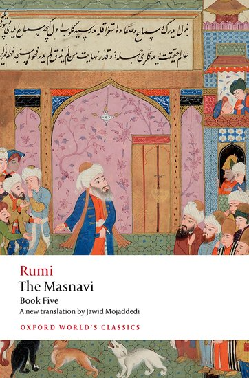

38:26 · 5 OPERE
Perché le fesserie hanno maggior presa dei discorsi seri?
Il filo del discorso
Il relatore parte da una ricerca personale fra i canali dedicati ai libri per chiedersi perché i discorsi semplici e compiacenti sembrino più attraenti dell’esame critico dei testi. Alla recensione ridotta al gusto personale contrappone una lettura che si misuri con concetti, lingua e argomenti. Il ricordo di una propria recensione di Susanna Tamaro apre una critica dei premi, dell’autorità culturale e della circolazione dei giudizi. Il centro filosofico del contributo è la distinzione fra un’autorità fondata sulla ragione e un potere sostenuto dalla forza o dalle credenziali: per chiarirla vengono accostati la Sapienza dei Proverbi, la creazione nella Genesi e il Logos giovanneo. Esperienze personali di studio, revisione editoriale e intervista televisiva alimentano poi la polemica contro l’accademia e i media. Nella seconda parte il relatore ricorre a esempi estremi di traduzione fra culture, alla vicenda di un missionario a North Sentinel e ad analogie sanitarie per sostenere che comprendere richiede conoscenze preliminari e rapporto con la realtà. La conclusione riprende questo criterio attraverso la parabola sufi dei cuccioli che abbaiano prima di nascere, riconoscibile nel Masnavi di Rumi. La scheda conserva il percorso argomentativo, distingue i riscontri dalle generalizzazioni e corregge l’esempio linguistico di portiera.
I libri nel discorso

Va’ dove ti porta il cuore
Copertina: Copertina Bompiani, Vintage, 2013, 188 pagine, ISBN 9788845272707, dal catalogo ufficiale Giunti. Prima pubblicazione del romanzo nel 1994; distinta dalla ristampa Solferino 2023.
Copertina autentica intera con nome Tamaro, titolo, albero, figura in corsa e marchi Vintage / Bompiani, decodificata e ispezionata. L’edizione di riferimento del 2013 non è attribuita al ricordo del relatore della prima uscita. I giudizi negativi sul romanzo restano suoi, senza certificare errori di pagine non citate o un plagio della sua recensione.
Titolo esplicito e autrice Tamaro identificata nel contesto del ricordo di una recensione.
Passaggio 5:11 ↗ · Fonti e libro ↗
Proverbi
Identificazione probabile
Copertina della Bibbia che contiene Proverbi: San Paolo, 2014 · Nuova Versione dai Testi Antichi · edizione di riferimento
Copertina dell’intera Bibbia, riutilizzata dalla voce già verificata in biblioteca. Non rappresenta un’edizione autonoma dei Proverbi e non identifica l’edizione citata nel video.
Parafrasi della Sapienza creata all’inizio delle opere, coerente con Proverbi 8,22; nome del libro e versetto non pronunciati.
Passaggio 8:34 ↗ · Fonti e libro ↗
Genesi
Copertina: Einaudi, I libri della Bibbia / Einaudi Tascabili, 2000; introduzione di Steven Rose
Copertina dell’edizione autonoma Genesi, nella serie I libri della Bibbia, con introduzione di Steven Rose. Edizione scelta come riferimento iconografico; nessuna edizione è confermata nel video.
Genesi esplicita nel confronto sulla creazione; ritorna a 2113 secondi con il serpente e il riferimento a Genesi 3,5.
Passaggio 9:23 ↗ · Fonti e libro ↗Vangelo secondo Giovanni
Copertina del volume completo: San Paolo, 2014 · Nuova Versione dai Testi Antichi · edizione di riferimento
Vangelo secondo Giovanni è un libro della Bibbia. L’immagine mostra il volume completo San Paolo di riferimento, non un’edizione autonoma del singolo libro e non una versione identificata nella citazione.
Testo giovanneo e incipit greco del Logos espliciti; riferimento a Giovanni 1,1.
Passaggio 9:36 ↗ · Fonti e libro ↗
Masnavi (Mathnawi)
Identificazione probabile
Volume: Masnavi, libro quinto: Copertina The Masnavi: Book Five, Oxford World’s Classics, Oxford University Press, 2022, traduzione di Jawid Mojaddedi, 400 pagine, ISBN 9780192857071. Rappresenta il solo quinto libro, contenente la parabola, non tutti i sei libri del poema.
Copertina autentica del servizio ufficiale OUP: miniatura persiana, nome Rumi, titolo The Masnavi, Book Five e traduttore. Il testo è stato riscontrato nella diversa traduzione Nicholson pubblicata con l’originale persiano dal Masnavi Project; non si assegna al video né l’edizione Oxford né una specifica traduzione italiana. La versione narrata sostituisce la risposta divina del poema con un dialogo maestro-discepolo: si segnala la rielaborazione e non una citazione letterale.
Racconto sufi del sogno dei cuccioli che abbaiano nel ventre materno: riscontro libro V vv. 1445–1460. Titolo e Rumi non pronunciati, versione rielaborata.
Passaggio 35:39 ↗ · Fonti e libro ↗Minutaggi ricavati da testi automatici, da riascoltare. Le identificazioni probabili sono segnalate accanto ai libri.